Mismo marco, misma linea de piso, mismos grosores, misma silueta sin
cara. Lo unico que cambia es la pose y hacia donde apunta la flecha.
Esta hoja la arma solo generar.py: nunca queda vieja.
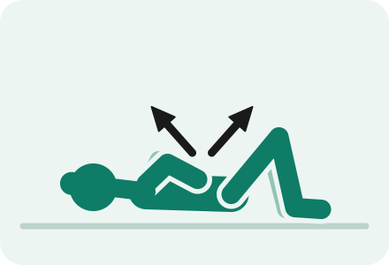
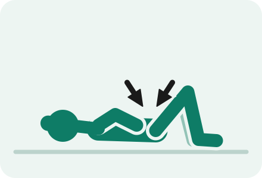
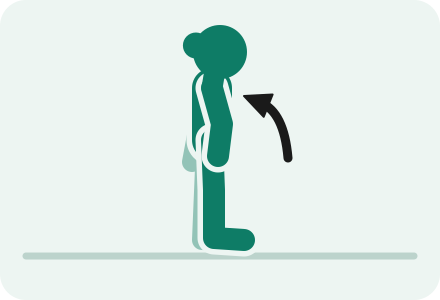
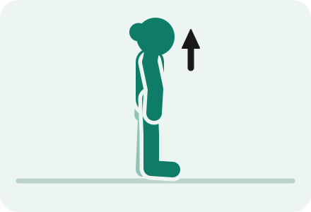
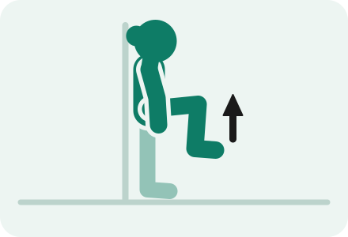
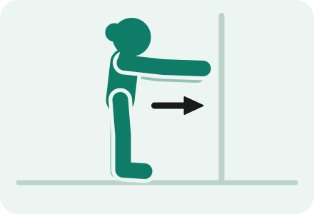
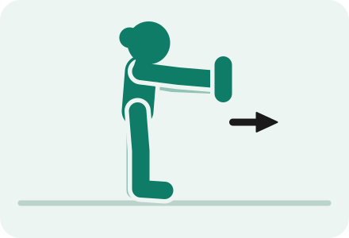
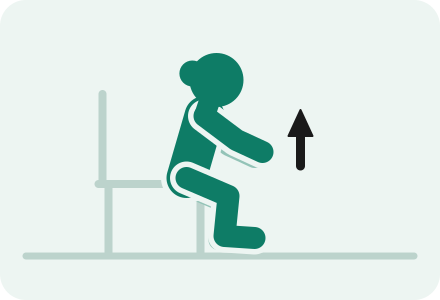
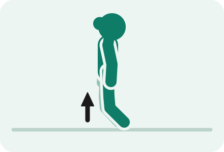
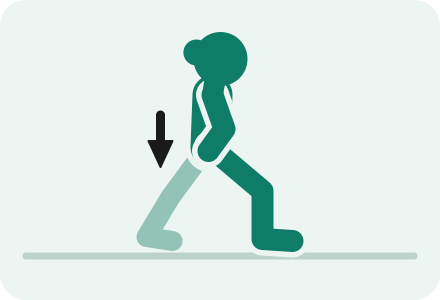
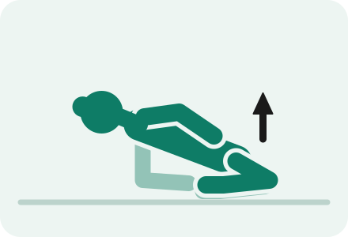
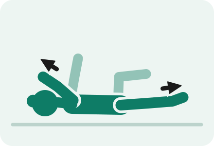
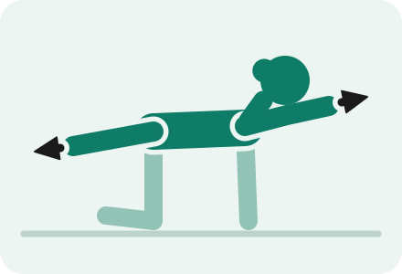
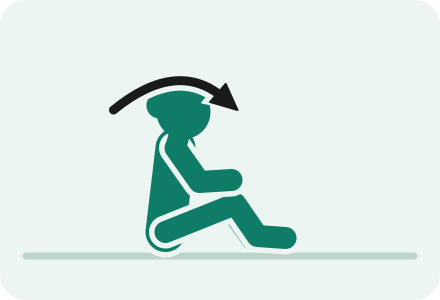
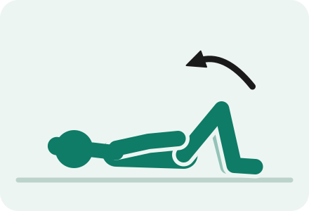
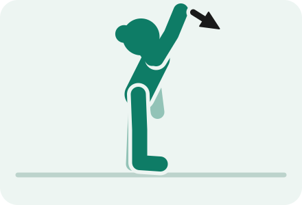
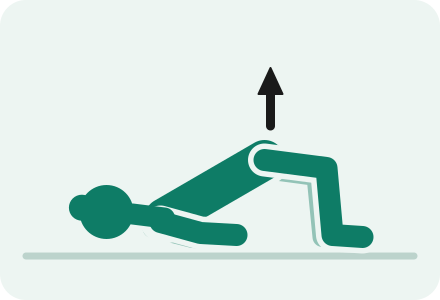
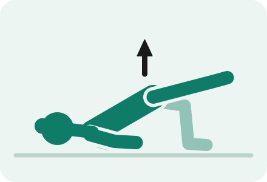
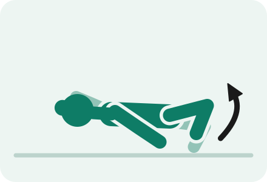
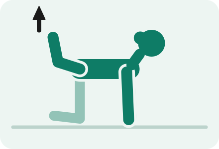
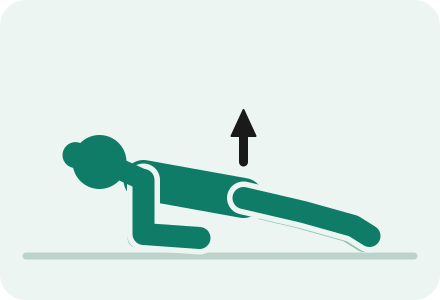
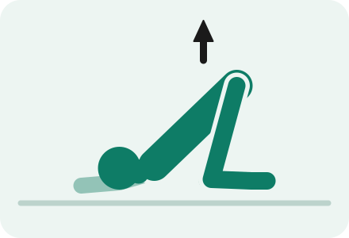
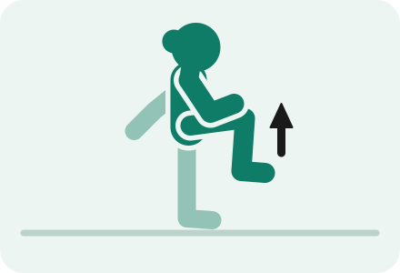
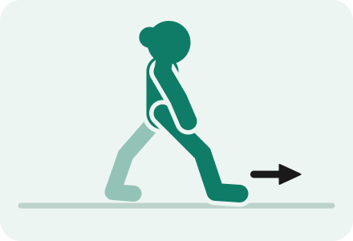
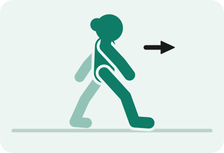
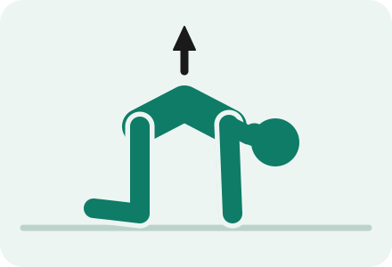
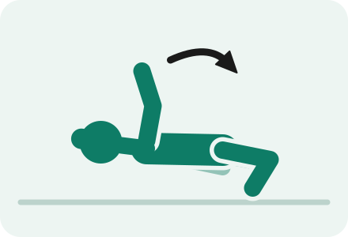